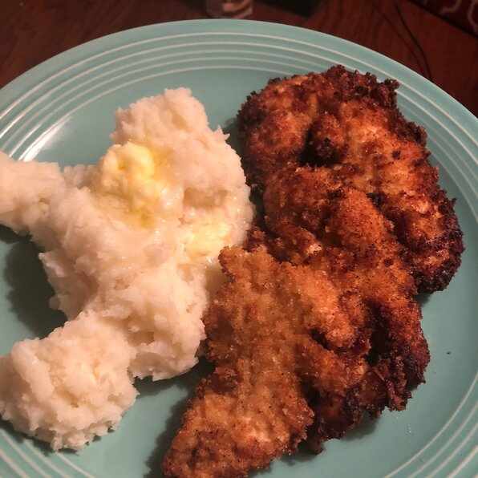

Chicken Schnitzel

Tasty and easy to make. Kids love it and you all will want more!
Good Shit right here
Ingredients
- 2 large eggs
- 3 tablespoons honey
- 3 tablespoons Dijon mustard
- 2 ½ tablespoons soy sauce
- 1 tablespoon crushed garlic
- 3 cups bread crumbs, or as needed
- 1 teaspoon salt
- 1 teaspoon ground black pepper
- vegetable oil for frying
- 12 boneless chicken breast halves, pounded very thin
- 1 lemon, cut into wedges
Steps
- Whisk eggs, honey, Dijon mustard, soy sauce, and garlic together in a bowl. Mix bread crumbs, salt, and pepper together in a shallow bowl.
- Heat 1/2 to 1 inch of vegetable oil in a heavy skillet to 350 degrees F (175 degrees C). You can also use a deep fryer.
- Put chicken slices in the egg mixture and knead until fully coated. Press chicken in the bread crumbs until evenly coated.
- Working in batches, carefully place chicken in the hot oil using tongs and cook until no longer pink in the center and browned on the outside,
3 to 4 minutes per side. Drain on paper towels and serve with lemon wedges.
Return to main page